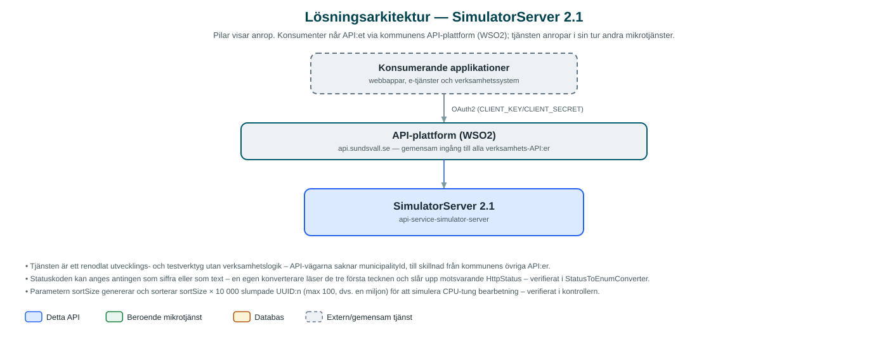

SimulatorServer
Testverktyg som simulerar API-svar med valfri statuskod, svarskropp och fördröjning – för att testa hur anropande system hanterar fel och långsamma svar.
Om API:et
När ett system som integrerar mot kommunens API:er ska testas behöver man kunna framkalla situationer som är svåra att åstadkomma mot riktiga tjänster: timeouts, femhundrafel, ovanliga statuskoder eller långsamma svar. SimulatorServer är ett litet verktyg som gör just det – anroparen bestämmer själv vilket svar servern ska ge.
Verktyget har två resurser under /simulations/response. POST-varianten ekar tillbaka den inskickade svarskroppen med vald HTTP-status, medan GET-varianten bygger ett Problem-svar (RFC 7807) där titel, detaljer, typ och instans kan styras med parametrar. Båda kan fördröjas ett valfritt antal millisekunder för att simulera långsamma tjänster.
GET-varianten kan dessutom belasta servern med ett sorteringsarbete av upp till en miljon slumpade UUID:n, vilket gör det möjligt att simulera CPU-tung bearbetning – användbart vid last- och resilienstester av exempelvis circuit breakers och timeout-inställningar.
Det här gör API:et
- Valfri statuskod – Svarar med den HTTP-status anroparen anger, för både lyckade svar och felsvar.
- Eko av svarskropp – POST-resursen returnerar den inskickade JSON-kroppen oförändrad, så att förväntade svar kan simuleras exakt.
- Konfigurerbara Problem-svar – GET-resursen bygger ett Problem-svar (RFC 7807) där titel, detaljer, typ och instans styrs med parametrar.
- Fördröjning – Svar kan fördröjas ett valfritt antal millisekunder för att simulera långsamma tjänster och testa timeouts.
- Simulerad CPU-last – Parametern sortSize låter servern sortera upp till en miljon slumpade UUID:n innan svaret skickas, för last- och resilienstester.
API-dokumentation
Ingen incheckad OpenAPI-specifikation hittades i källkodsförrådet; se källkoden för aktuell API-dokumentation. Programvaruförteckningen (SBOM) listar tjänstens samtliga tredjepartskomponenter med version och licens.
Teknisk dokumentation
Nedan beskrivs hur tjänsten är uppbyggd, vilka andra tjänster den anropar och vad som krävs för att driftsätta den. Informationen är härledd ur källkoden och dess konfiguration på GitHub.
Arkitektur

API:et är en mikrotjänst (Java 25, Spring Boot via kommunens gemensamma tjänsteplattform dept44 (8.0.8), byggd med Maven). Konsumenter når tjänsten via kommunens gemensamma API-plattform (WSO2) på api.sundsvall.se – tjänsten anropas aldrig direkt.
Teknikstack
- Språk: Java 25
- Ramverk: Spring Boot via kommunens gemensamma tjänsteplattform dept44 (8.0.8), byggd med Maven
- Övrigt: Ingen persistens och inga externa integrationer – hela tjänsten är en enda REST-kontroller
Beroenden till andra mikrotjänster
Inga anrop till andra mikrotjänster hittades i källkodens konfiguration.
Programvaruförteckning
Tjänsten bygger på 193 tredjepartskomponenter fördelade på 10 olika licenser. Till skillnad från tabellen ovan, som listar andra mikrotjänster, avses här de programbibliotek som ingår i bygget. Se programvaruförteckningen för hela listan.
Konfiguration och driftsättning
- Ingen miljöspecifik konfiguration krävs – tjänsten saknar databas och integrationer
- OpenAPI-dokumentationen genereras vid körning ur koden (ingen specifikation är incheckad i repot)
- Körs lokalt med ./mvnw spring-boot:run; välkomstsida på port 8080
Noterbart ur källkoden
- Tjänsten är ett renodlat utvecklings- och testverktyg utan verksamhetslogik – API-vägarna saknar municipalityId, till skillnad från kommunens övriga API:er.
- Statuskoden kan anges antingen som siffra eller som text – en egen konverterare läser de tre första tecknen och slår upp motsvarande HttpStatus – verifierat i StatusToEnumConverter.
- Parametern sortSize genererar och sorterar sortSize × 10 000 slumpade UUID:n (max 100, dvs. en miljon) för att simulera CPU-tung bearbetning – verifierat i kontrollern.
- Ingen OpenAPI-specifikation finns incheckad i repot; specifikationen genereras vid körning av dept44:s OpenAPI-stöd.
Källkod
Källkoden är öppen och finns hos Sundsvalls kommun på GitHub. I källkodsförrådet finns även instruktioner för att klona, konfigurera och starta tjänsten i egen miljö.